| HOME | PERSONAL | PROJECTS | LINKS |
Per gestire le transazioni economiche tra N persone si è svilupppato un programma dedicato. Il software salva lo stato dei debiti che corrono tra gli utenti in una matrice; ogni elemento contiene il debito dell'utente identificato col numero di riga con quello identificato dal numero della colonna. L'informazione è tutta contenuta nella matrice triangolare superiore, tuttavia è risultato utile riempire la triangolare inferiore con i valori opposti, la diagonale è nulla.
Dopo un certo tempo di utilizzo del software capita che a fronte di numerose transazioni qualche casellina riporti valori eccessivi nonostante il totale debiti di un utente sia limitato.
Se ad esempio l'utente A deve 5 a B, B deve 5 a C è palese che la transazione riguarda A e C.
Esiste in verità un altro criterio più intuitivo. La situazione dei debiti è più sineticamente espressa da un numero inferiore di valori: i totali debiti di ciascuno (e non i singoli debiti). Si può pensare a questa visione come "a cassa comune".
L'informazione sulla situazione economica della casa è tutta contenuta nella rappresentazione "totale debiti di ciascuno". Fissati i valori dei "debiti totali" ci sono infiniti modi di riempire le caselle della rappresentazione a "matrice".
Ci si propone di studiare il problema per passare da una rappresentazione all'altra. Vista la praticità della rappresentazione "a matrice", si vuole inoltre trovare la rappresentazione ottima (se esiste, se è unica o meno...) a partire dai valori numerici dei "debiti totali".
N persone. N importi.  transazioni
transazioni
Questa è la rappresentazione "a matrice":
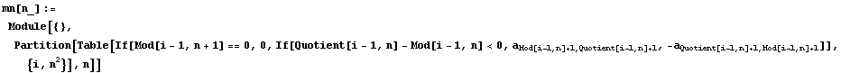
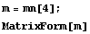
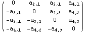
Le nostre incognite sono gli elementi della triangolare superiore. Le chiameremo vars.
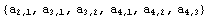
L'unico vincolo cui devono soddisfare le incognite è che la
somma degli elementi di ciascuna riga (o colonna) è noto.
Sono dati infatti gli N valori corrispondenti ai "debiti totali".
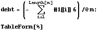
| 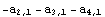 |
| 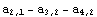 |
| 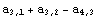 |
| 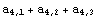 |
Si imposta un sistema nelle
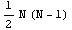
incognite costituito da N equazioni.Questo sistema non omogeneo è rappresentabile geometricamente da una varietà lineare.
Si cerca di ottenere che la configurazione a "matrice", ovvero le
nostre vars, contenga valori piccoli.
Una possibile condizione geometrica che esprima questa condizione
è che il modulo del vettore {vars} sia minimo.
Segue una funzione di utilità che ci permette di passare dalla nostra rappresentazione "a matrice", alla matrice acratteristica del sistema in questione.
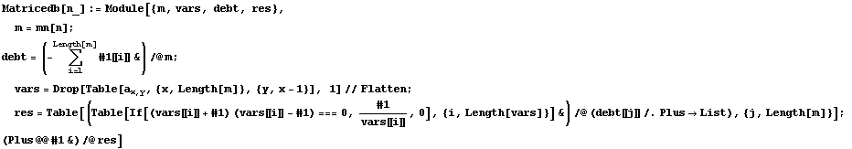
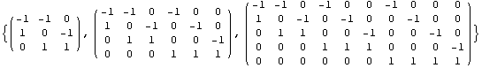
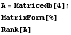
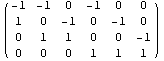
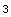
Le nostre variabili
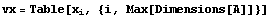
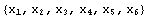
I termini noti
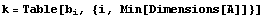
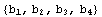
Il sistema
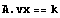
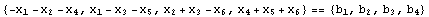
La trasformazione lineare associata è:
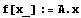
Vogliamo risolvere il sistema f[x]⩵k
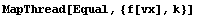
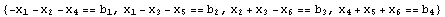
Scegliamo per i termini noti dei valori numerici validi.
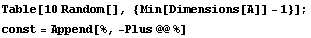
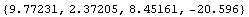
La soluzione particolare.
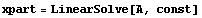
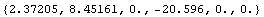
Una base delo spazio soluzione del sistema omogeneo A.x⩵0
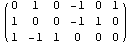
La soluzione generale è data da quella paricolare sommata agli elementi della omogenea pesati da N coefficienti
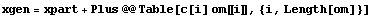
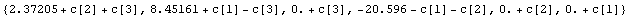
per il calcolo numerico occorre calare nel particolare:
N=4
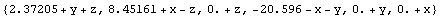
![[Graphics:Images/index_gr_39.gif]](Images/index_gr_39.gif)
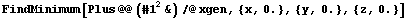
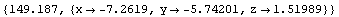
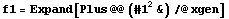
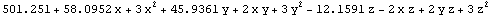
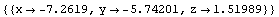
N=5:
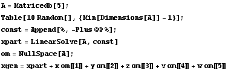
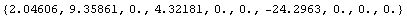
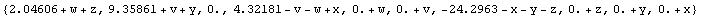
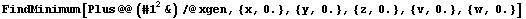
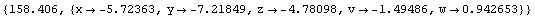
![[Graphics:Images/index_gr_51.gif]](Images/index_gr_51.gif)
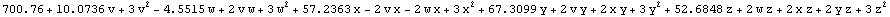
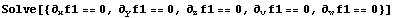
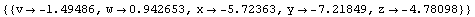
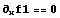
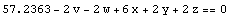
Unicità:
Trattandosi di verietà lineare, minimizzare un
vettore che la descrive è un problema banale risolvibile con gli
strumenti dell'algebra lineare. La soluzione esiste ed è unica.
Il modulo del vettore è descritto da una conica (in
N (N-1)/2 dimensioni), quindi il minimo se esiste è unico.
Imponendo che il gradiente sia nullo si ottine un sistema di facile
soluzione.
| HOME | PERSONAL | PROJECTS | LINKS |